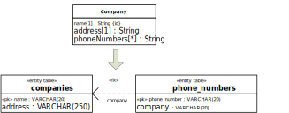
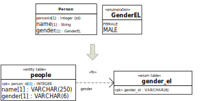
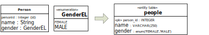
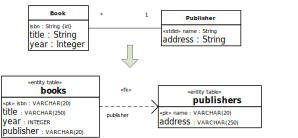
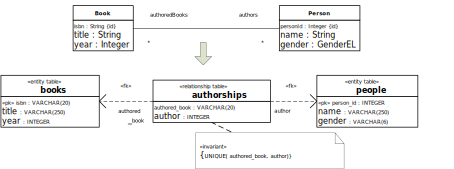
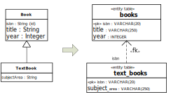

9.2. Deriving a Table Model from an Information Design Model
Originally, the Structured Query Language (SQL) has been based on the Relational Database model of Edgar F. Codd. This holds up to SQL92. After OO modeling and programming have been established in the 1990s, a new version of SQL was defined: SQL:99, which extends SQL92 by adding new language elements based on OO concepts.
However, many popular SQL DBMSs, such as MySQL and SQLite, do not support the OO features defined by SQL:99. Therefore, SQL92 is still the mainstream paradigm and we will focus our considerations on SQL92.
Recall that, by default, a foreign key refers to the primary key of the referenced table, so it can be defined by specifying the source attribute (list) in the referencing table as well as the referenced table.
For being able to make SQL-92 table models in the form of special UML class diagrams, we need to define the following UML stereotypes:
| Stereotype | Base class | Description |
|---|---|---|
| «entity table» | Class | A class representing a relational database table that is populated with rows representing entities. |
| «relationship table» | Class | A class representing a relational database table that is populated with rows representing relationships between entities, implying that its attributes are foreign keys referencing the involved entity tables. |
| «enum table» | Class | A class representing a single-column table that is populated with rows representing enumeration literals. |
| «pk» | Attribute | An attribute (combination) representing the primary key of a table. |
| «fk» | Dependency | A dependency representing a foreign key. |
| «index» | Attribute | An attribute representing a column to be indexed. |
Summary: Making an SQL92 table model
For each design model class representing an entity type, create a corresponding data model class representing an entity table:
Categorize the class with the stereotype «entity table» and apply the naming convention of lower-case plural table names. So, for instance, the design class name
Bookis converted to the «entity table» class namebooks.Replace the UML standard identifier designation
{id}with the primary key stereotype«pk».Replace the platform-independent datatype names (such as String, Integer, Decimal, Date and Boolean) with corresponding SQL92 datatype names.
This results in a model like the following one:
Figure 9-1. Replacing platform-independent datatype names with SQL datatype names Since SQL92 does not support the datatype Boolean, this requires using a workaround for it, such as CHAR(1) restricted to the two values ‘y’ and ‘n’.
Eliminate multi-valued attributes. In general, a multi-valued attribute
min a classCcan be transformed into a tablemhaving a single column with the same name and type as the attributem, complemented by a foreign key attribute referencingC, as shown in the following diagram wherecompanyis the foreign key attribute referencing thecompaniestable:Figure 9-2. Eliminating multi-valued attributes Notice how a foreign key attribute is graphically expressed with a UML dependency arrow stereotyped «fk» with the attribute's name shown at its source end.
In simple cases, multi-valued attributes may be represented by a string-valued attribute. This requires decomposing the string representing a set into its elements by using appropriate string manipulation operators. It only works in simple cases.
Turn any enumeration datatype into a corresponding «enumeration table» class and define suitable foreign keys referencing it in all «entity table» classes where the enumeration datatype has been used. For each enumeration literal from the enumeration datatype, insert a corresponding row in the enumeration table.(1)
Figure 9-3. Turning an enumeration datatype into an «enumeration table» class If the target DBMS is MySQL, then the effort of introducing a special table and a foreign key for implementing an enumeration datatype can be avoided. Instead, MySQL's non-standard enum column type can be used in the following way:
Figure 9-4. Handling an enumeration datatype in MySQL For eliminating associations, we need to consider two cases:
A functional association, mapping instances of its domain class to instances of its range class, is eliminated by
Adding a suitable foreign key attribute (here, publisher) to the entity table class that corresponds to the domain class of the functional association (books).
Adding a foreign key dependency arrow stereotyped with «fk», annotated with the name of the foreign key attribute (publisher) at its source end and pointing to the class at the functional association end (publishers).
Figure 9-5. Eliminating a functional association A many-to-many association is turned into a relationship table class with two foreign key attributes (here, authored_book and author), one for each of the two involved entity classes, and an attached integrity constraint (invariant) requiring the combination of both foreign key attributes to be unique.
Figure 9-6. Eliminating a many-to-many association 
Eliminate generalization relationships in the following way:
Copy the standard identifier attribute(s) of the superclass to the subclass.
Replace the generalization arrow with a corresponding foreign key dependency arrow from the subtable to the supertable such that the primary key attribute(s) of the subtable are foreign key attribute(s).
Figure 9-7. Eliminating a generalization relationship Define an index for any attribute that serves as a search field to speed up the execution of corresponding queries. This may be done with the help of the attribute stereotype «index».(2)
For performance reasons, to speed up the execution of certain queries and certain change operations, certain tables may have to be splitted into two or more parts (vertically or horizontally), which may be done in the implementation model. But we will not consider this issue here.
Finally, the resulting SQL-92 table model, which contains only table classes, foreign key dependency arrows and constraints, can be easily coded with SQL CREATE TABLE statements, as explained in the next section.
(1) Enumeration-valued attributes can also be implemented by the available means of a specific platform. For instance, in MS Access, enumeration-valued attributes can be implemented with the help of the Lookup Wizard and a suitable Validation Rule.
(2) A database index is similar to a book index. It has a content field and a pointer. A book index has a topic and a page number. While a book index is linear, a database index is typically in the shape of a B+ tree.